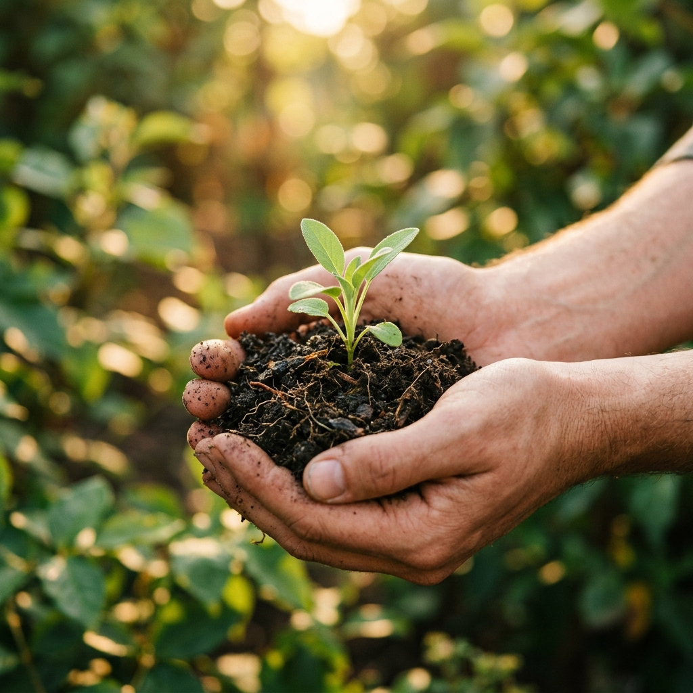

Psicología y Crianza
"Veo en vos una fuerza enorme. Una llama que se enciende cada vez que elegís conectar con tus peques desde la presencia y el amor."
Nací en un pequeño pueblo de Santa Fe, rodeada de naturaleza y vínculos. Desde chica me apasiona contemplar lo simple: tocar el pasto, oler flores, saborear comidas. Amante de las charlas profundas, de esas que abren el corazón.
Me formé en psicología y salud mental perinatal. Siempre curiosa por recuperar la simpleza y la espontaneidad de las infancias, dediqué tres años a la clínica infantil, acompañando a madres y padres en los desafíos de la crianza.
Hoy, tras mi propio camino de autoconocimiento, acompaño a mamás a mirarse, a ser puente y a transformar la crianza desde un lugar más amoroso y libre.
Siempre es con amor, Deni.
@psidenisevenica
Te acompaño a fortalecer el vínculo con vos misma y con tu peque, para que puedas comprender su mundo emocional y responder a sus necesidades con confianza y seguridad.
Abrirnos a lo que sentimos, con curiosidad y respeto hacia nuestra historia. Dar espacio a nuestras emociones para escucharlas y aprender de ellas.
Habitar el momento presente con apertura y sin juicio. La presencia nos guía a contemplar lo que sucede de manera consciente.
Elegir cómo acompañar a tu peque. Reconectar con tu historia para descubrir recursos y transformar el vínculo.
Un encuentro de 75 minutos para acompañarte en el desafío de criar con más calma, claridad y confianza.
Un mes de claridad y sostén para acompañar tu crianza con calma y seguridad.
Recomendado para mamás de niños de 2 a 8 años.
Quiero mi Brújula →
Un workshop para vivir la maternidad y la crianza desde otro lugar.
Si tenés peques entre los 2 y los 6 años de edad, esta es una invitación a mirarte, a pausar y a criar desde un lugar más amoroso y libre.
Conectar y mirar con amor a tu niña interior.
Lograr herramientas de autorregulación y manejo de emociones.
Conocer otra forma de construir límites, desde el amor y el respeto.
Entender qué necesita tu peque para actuar con mayor calma.
"Para lograr una transformación en la crianza, el cambio empieza volviendo a tu niña interior."
Consultar próximas fechas →Creo profundamente que la brújula para acompañar a tu peque de la mejor manera está dentro tuyo. Mi guía es ayudarte a escucharla y hacerle espacio.
Agendar mi sesión ahora →